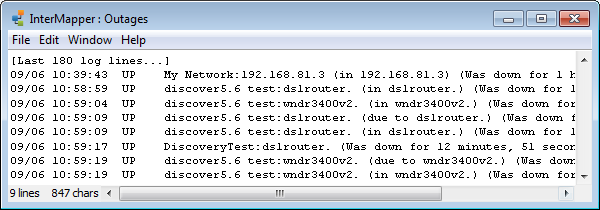

The Outages Log
InterMapper summarizes outages that have occurred in the Outages Log.
An outage is defined as a device that has gone from the UP state to the
DOWN state, and then returned to the UP state. InterMapper tracks the start
and end time of the outage, and computes the duration. Each time a device goes
DOWN and then comes back UP, an entry is placed in the Outages log.
To open the Outages Log window:
-
From the Windows Menu, choose Outages
from the Logs submenu. The Event Log window appears, as shown below.

The Outages window shows the start and end time
and the duration of outages.
The controls in the Outages Log window are identical to those of the
other Event Log windows, and are described on that
page.